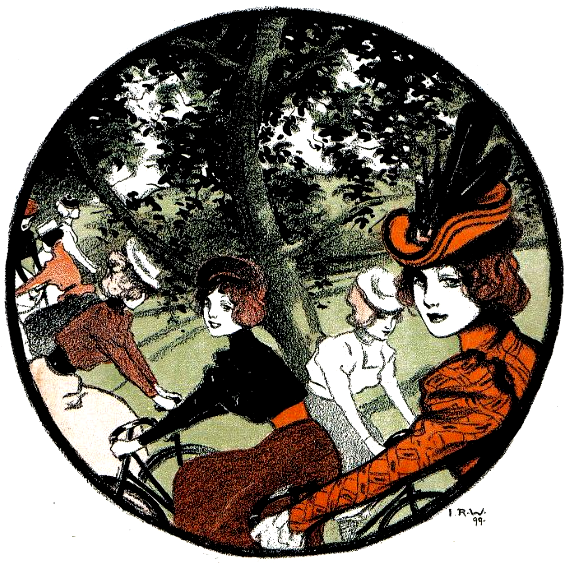

Notes on sustainability and resilience.
In an age of disposable smart devices and unrepairable electronics, there are few topics that occupy my mind as much as planned obsolescence.
Living aboard a sailboat, away from reliable internet connectivity, and outside of delivery networks, forces us to explore ways with which we can strengthen and simplify the toolset onto which we rely to stay afloat.
Casting off, we forlet 3-in-1 packages, bloated always-online services, and establish practices of recyclism, minimum viable products, small-sharp modular utilities. We see smart and robust as opposing attributes to a device, smart is inherently contrary to a single purpose tool, and thus incompatible with dependable solutions.
I periodically find myself thinking about operating systems, or more specifically the interaction design of OSes. In attempting to tackle the difficult UX challenges of that space, unrealizing that my failure to solve these issues might very well come from the simple fact that the purpose of operating systems is to enable multi-tasking, multi-tasking that I try to eradicate from my daily life, making these issues deeply unsolvable and my love for sharp tools and OSes irreconcilable.
Sometimes, I wonder if we shouldn't re-orient our focus onto building things to be run on small low-power open-source single-purpose boards, but I also consider the impact of pushing for the production of more electronics, perhaps creating software targeting old hardware might be what we should be looking into. There must be a reason why everybody favours creating new disposable electronics over supporting pre-existing hardware?
Despite all this, I wonder, Is there a way to create and distribute software and electronics in a way that is environmentally conscious? perhaps not.
One second..
Since the writing of the original post titled "longtermism", the term has taken a different connotation with which I do not want to associate, and so the entry was renamed and moved here.
incoming about research faqs longtermism